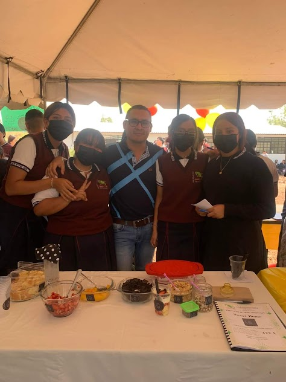
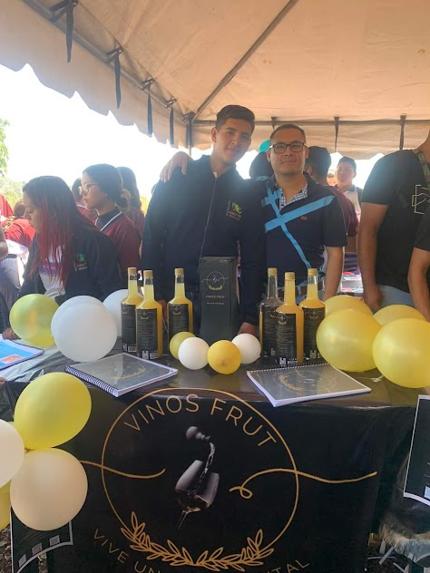

Bienvenidos a la carrera de Procesos de Gestión Administrativa

Descubre más sobre nuestra carrera y cómo puede ayudarte a alcanzar tus metas profesionales.
En *CECYTEM 20*, estamos comprometidos con la formación de profesionales altamente capacitados en el área de gestión administrativa. Nuestra carrera de Procesos de Gestión Administrativa está diseñada para brindarte las herramientas y conocimientos necesarios para destacarte en el mundo empresarial.

¿Por qué estudiar con nosotros?
- *Plan de estudios actualizado*: Nuestro programa académico se mantiene en constante actualización para adaptarse a las necesidades y tendencias del mercado laboral.
- *Docentes especializados*: Contamos con un equipo de profesionales con amplia experiencia en el ámbito administrativo y empresarial.
- *Infraestructura moderna*: Nuestras instalaciones están equipadas con tecnología de punta para garantizar una experiencia educativa óptima.
- *Convenios empresariales*: Colaboramos con diversas empresas para ofrecerte oportunidades de prácticas profesionales y proyectos reales.
- *Desarrollo integral*: Fomentamos el desarrollo de habilidades blandas y competencias clave que complementan tu formación técnica.

Objetivos de la carrera
La carrera de Procesos de Gestión Administrativa en CECYTEM 20 tiene como objetivos:
- Formar profesionales con capacidad para planificar, organizar, dirigir y controlar procesos administrativos en diferentes tipos de organizaciones.
- Desarrollar habilidades analíticas para la toma de decisiones efectivas.
- Promover la innovación y mejora continua en los procesos administrativos.
- Fomentar un enfoque ético y responsable en la gestión empresarial.
Visita nuestra sección de registro para obtener más información sobre el proceso de admisión.
En CECYTEM 20, tu futuro empieza aquí. ¡Únete a nosotros y da el primer paso rumbo a la excelencia!